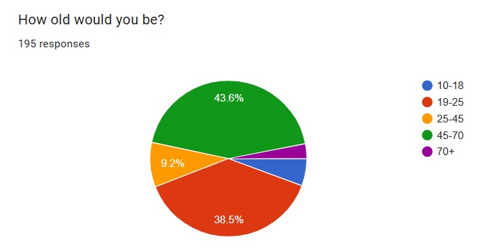
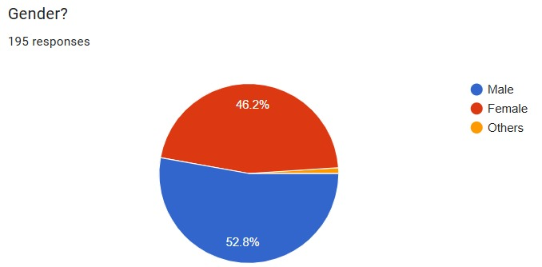
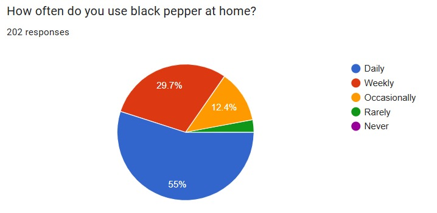
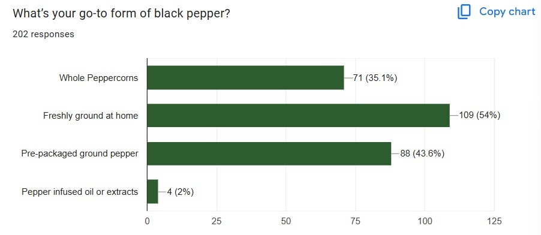
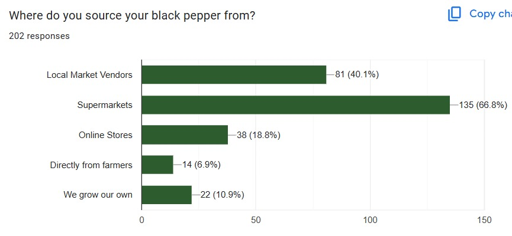
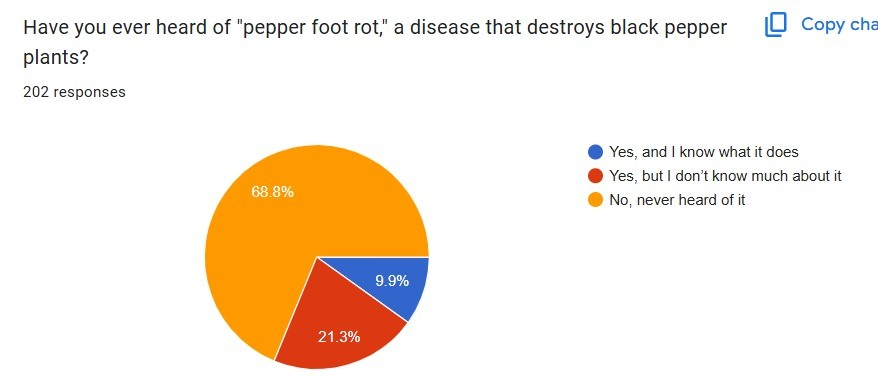
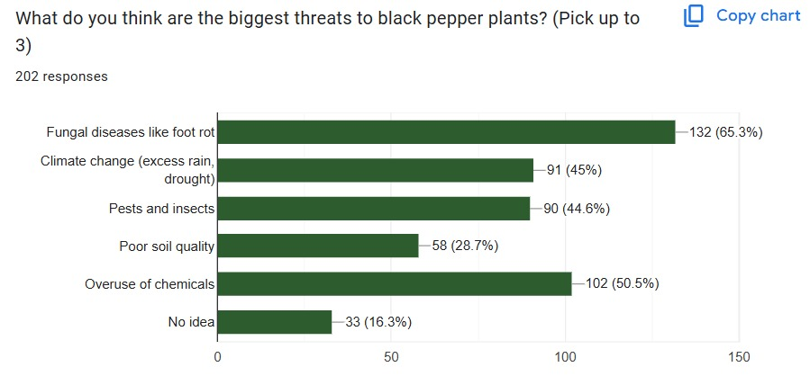
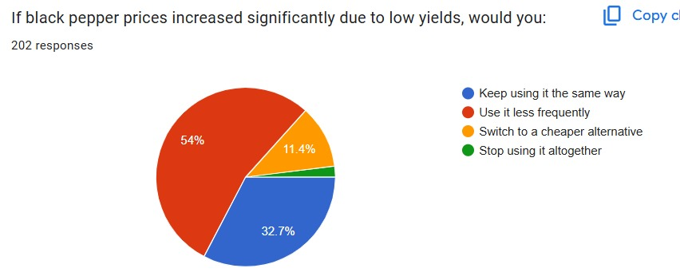
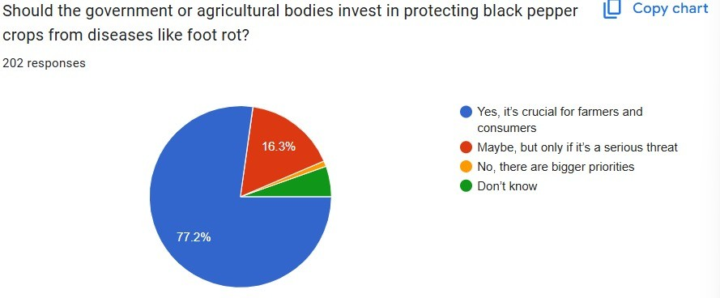

On 12th January, 2025, a call with one of the stakeholders who was
former silk cultivator was conducted. The cultivator had specified
that this strain of the fungal muscadine will not happen in regions
of madhya pradesh and northern india even though it is told to occur
across all silk cultivations due to absence of heavy monsoon and
waterlogging conditions. Hence the impact is reduced greatly hence
we had to eliminate our project.
(Lignin biodegradation)
Conversation with sugarcane farm owner :
A discussion was held with a sugarcane farm owner, who primarily
focuses on the cultivation and sale of sugarcane. While her
expertise lay in commercial farming rather than research, she
provided valuable industry insights and facilitated connections with
relevant institutions. She shared contact details for Molychem Pvt.
Ltd., a supplier of chemical reagents, and the ICAR-Sugarcane
Breeding Institute, which specializes in sugarcane genetics and
agronomic research. While neither institution focuses specifically
on lignin extraction or utilization, Molychem Pvt. Ltd. could serve
as a source for necessary reagents, and the ICAR-Sugarcane Breeding
Institute may provide insights into sugarcane composition and
related research areas.
(Iron Toxicity in Paddy)
Call with an environmental science student Ms. Brindha :
This discussion provided insights into the management of iron
toxicity in rice. The student explained that the issue is typically
addressed by adjusting soil pH, allowing crops to regulate iron
uptake naturally. Since iron is a minor nutrient, addressing this
problem on a large scale would have limited impact, as farmers often
switch to iron-tolerant varieties like ADT 52 instead. Additionally,
she noted that biosensors are rarely adopted by farmers, making them
an impractical solution. She suggested alternative areas of
research, including nanoplastic removal from soil and climate-smart
agriculture. The osm-3 gene was referenced, which enhances
osmoregulation and salinity tolerance, as a potential tool for
improving crop resilience, though GMO adoption remains a challenge.
Arsenic toxicity in rice was identified as a more significant
concern, but existing microbial solutions necessitate a novel
approach. Lastly, she highlighted that hydrogels are primarily used
for drought-stress management, rather than for addressing iron
toxicity.
A Survey on Pepper Consumption
A survey called “Salt without Pepper?” was conducted to understand
the relevance of Pepper in domestic households and daily life.
As of 9th February,2025 (time 12:03 pm) we had 200 responses for the
survey and the results of our survey were as follows:
From the survey we gained insights into the go-to form of black
pepper used by most of the consumers which was freshly ground at
home. It gave us an approximate idea on how frequently it was used
by consumers and the source from where they purchased it. 68.5% of
the people hadn't heard of the disease and so this survey also
served the purpose of spreading awareness of this disease in the
general population. According to the numbers 77.5% of the people
agree that the government or agricultural bodies should invest in
protecting black pepper crops from diseases like foot rot.









Future Plans for HP
Contacting Ayurvedic doctors
Proposal to talk to Ayurvedic Doctors, to know more about Ayurveda
about how Pepper has been used for medicinal purpouses since ancient
times.
Enganging with black pepper farmers
We would conduct surveys and interviews with black pepper farmers in
Kerala, Karnataka, and Tamil Nadu to understand their challenges
with P. capsici and get a general idea on how pepper cultivation is
done. This would also tell us how we can implement our solution in
fields.
Future Collaborations
The Student Project Mars Rover Manipal of MIT have designed a more
feasible flurometer during the year 2023-24. We propose to
collaborate with them and inspire it in making a localized sensor
for our detection method.
SDGs
SDG 2: Zero Hunger
The initiative decreases yield losses from
Phytophthora capsici and other diseases and promotes
sustainable agricultural production by employing microbial
biocontrol agents. Maintaining a steady supply of high-value crops
is ensured by managing black pepper infections.
SDG 3: Good Health and Well-Being
Food may include toxic residues from fungicides used to control
P. capsici. Utilising Bacillus-based biocontrol
lowers the amount of hazardous substances people are exposed to.
SDG 12: Responsible Consumption and Production
The project encourages the use of biological solutions for crop
protection, reducing environmental contamination, by promoting
biological disease management in place of synthetic fungicides.
Healthier crops and improved disease resistance lead to lower crop
losses, reducing overall food waste in black pepper production.
Consumer awareness of sustainable farming by promoting
Bacillus as a natural plant protection method.
SDG 13: Addressing Climate Change
Biocontrol techniques lessen reliance on chemical fungicides, whose
manufacture uses a lot of energy thus reducing carbon footprint.
Furthermore, by balancing the soil microbiome,
Bacillus species lessen the demand for artificial
fertilizers and improve soil quality.
SDG 15: Life on Land
While chemical pesticides have the potential to upset ecosystems,
microbial biocontrol techniques solely target infections and do no
harm to beneficial organisms. Long-term agricultural sustainability
is ensured by preventing soil deterioration through the avoidance of
excessive chemical use.